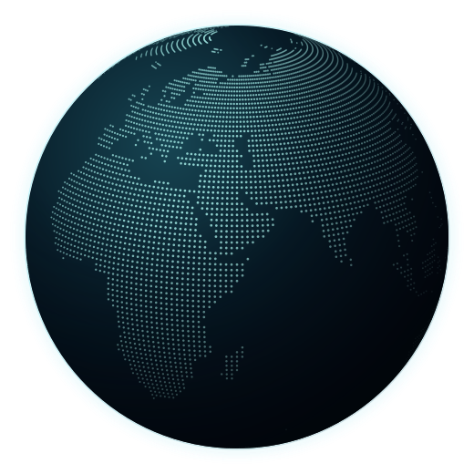

STRUCTURE / BASELINE STATE合成初期状態
食料 エネルギー

ONE PLANETEIGHT INDEPENDENT STATES
必須機能充足 未観測資源不足 未観測輸送中 未観測
構造データ確認中破線：経路の存在 ／ 実流量は未観測
STATE / RESOURCES
国家 —
国家自律性選択・拒否・条件付き参加の余地。判断は未観測。
国家的自立性在庫・需要・生産能力。維持可能期間は未観測。
POTENTIAL CONNECTIONS
経路と依存
国家未選択
生産の投入依存
世界の安定化は、国家の自律性や資源分布と
どのように両立・衝突するか？
観測・証拠 PROVENANCE
表示中の在庫・需要・能力・経路は、合成基準世界の定義値。Agent判断・取引・回復・研究結果は含まない。国家配置は抽象配置。
資源バーは資源ごとの最大初期在庫を共通上限とする。経路の太さは定義容量に対応。線の強調は選択状態であり、使用量や重要度ではない。
地形：Natural Earth。国家・経路の地理的位置は示さない。